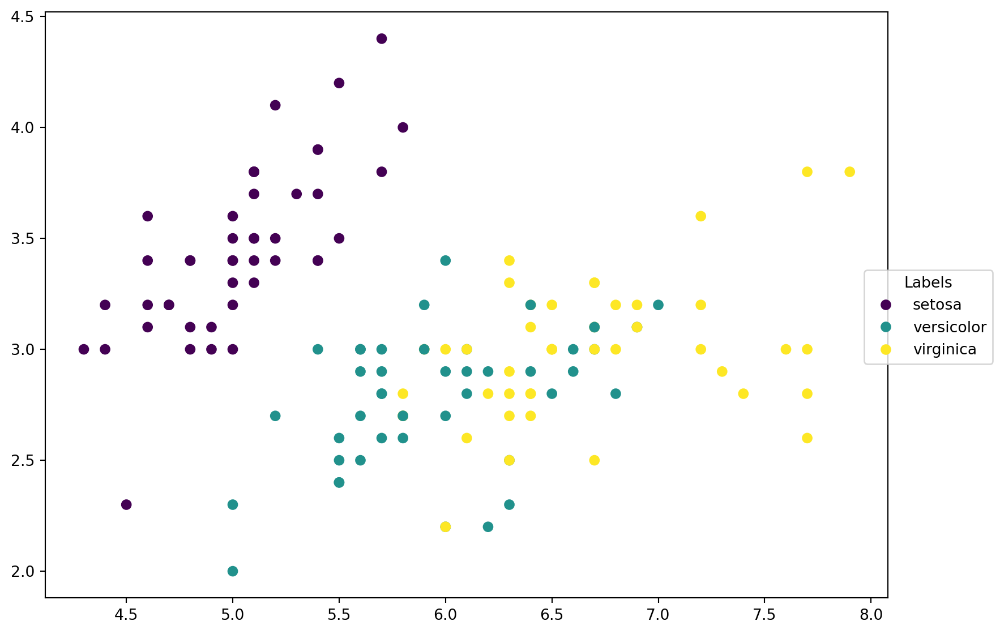
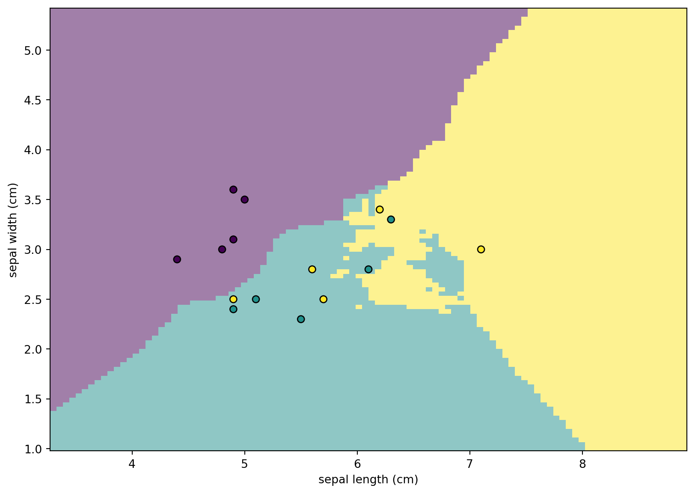
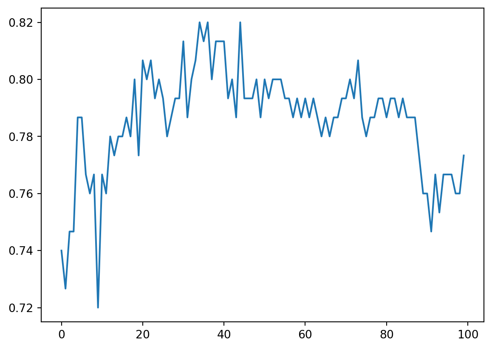
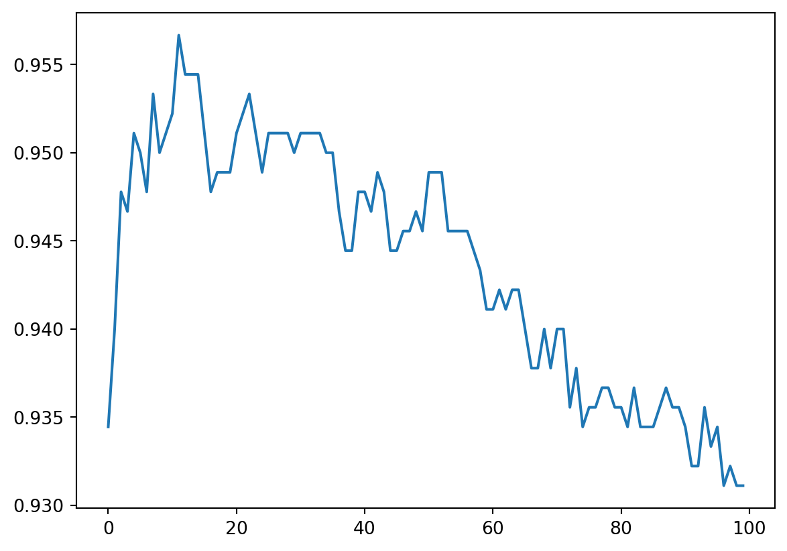
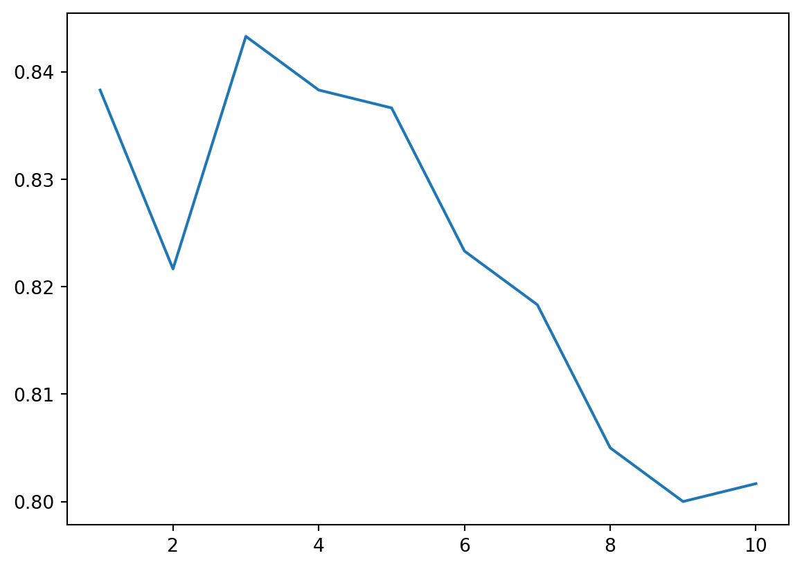

2 k-Nearest Neighbors algorithm (k-NN)
This algorithm is different from other algorithms covered in this course, that it doesn’t really extract features from the data. However, since its idea is easy to understand, we use it as our first step towards machine learning world.
Similar to other algorithms, we will only cover the beginning part of the algorithm. All later upgrades of the algorithms are left for yourselves to learn.
References: [1].
2.1 k-Nearest Neighbors Algorithm (k-NN)
2.1.1 Ideas
Assume that we have a set of labeled data \(\{(X_i, y_i)\}\) where \(y_i\) denotes the label. Given a new data \(X\), how do we determine the label of it?
k-NN algorithm starts from a very straightforward idea. We use the distances from the new data point \(X\) to the known data points to identify the label. If \(X\) is closer to \(y_i\) points, then we will label \(X\) as \(y_i\).
Let us take cities and countries as an example. New York and Los Angeles are U.S cities, and Beijing and Shanghai are Chinese cities. Now we would like to consider Tianjin and Russellville. Do they belong to China or U.S? We calculate the distances from Tianjin (resp. Russellville) to all four known cities. Since Tianjin is closer to Beijing and Shanghai comparing to New York and Los Angeles, we classify Tianjin as a Chinese city. Similarly, since Russellville is closer to New York and Los Angeles comparing to Beijing and Shanghai, we classify it as a U.S. city.
This naive example explains the idea of k-NN. Here is a more detailed description of the algorithm.
2.1.2 The Algorithm
k-NN Classifier
Inputs: Given the training data set \(\{(X_i, y_i)\}\) where \(X_i=(x_i^1,x_i^2,\ldots,x_i^n)\) represents \(n\) features and \(y_i\) represents labels. Given a new data point \(\tilde{X}=(\tilde{x}^1,\tilde{x}^2,\ldots,\tilde{x}^n)\).
Outputs: Want to find the best label for \(\tilde{X}\).
- Compute the distance from \(\tilde{X}\) to each \(X_i\).
- Sort all these distances from the nearest to the furthest.
- Find the nearest \(k\) data points.
- Determine the labels for each of these \(k\) nearest points, and compute the frenqucy of each labels.
- The most frequent label is considered to be the label of \(\tilde{X}\).
2.1.3 Details
- The distance between two data points are defined by the Euclidean distance:
\[ dist\left((x^j_i)_{j=1}^n, (\tilde{x}^j)_{j=1}^n\right)=\sqrt{\sum_{j=1}^n(x^j_i-\tilde{x}^j)^2}. \]
- Using linear algebra notations:
\[ dist(X_i,\tilde{X})=\sqrt{(X_i-\tilde{X})\cdot(X_i-\tilde{X})}. \]
- All the distances are stored in a \(1\)-dim numpy array, and we will combine it together with another \(1\)-dim array that store the labels of each point.
2.1.4 The codes
This part is optional.
argsortuniqueargmax
import numpy as np
def classify_kNN(inX, X, y, k=5):
# compute the distance between each row of X and Xmat
Dmat = np.sqrt(((inX - X)**2).sum(axis=1))
# sort by distance
k = min(k, Dmat.shape[0])
argsorted = Dmat.argsort()[:k]
relatedy = y[argsorted]
# count the freq. of the first k labels
labelcounts = np.unique(relatedy, return_counts=True)
# find the label with the most counts
label = labelcounts[0][labelcounts[1].argmax()]
return label2.1.5 sklearn packages
You may also directly use the kNN function KNeighborsClassifier packaged in sklearn.neighbors. You may check the description of the function online from here.
There are many ways to modify the kNN algorithm. What we just mentioned is the simplest idea. It is correspondent to the argument weights='uniform', algorithm='brute and metric='euclidean'. However due to the implementation details, the results we got from sklearn are still a little bit different from the results produced by our naive codes.
2.1.6 Normalization
Different features may have different scales. It might be unfair for those features that have small scales. Therefore usually it is better to rescale all the features to make them have similar scales. After examining all the data, we find the minimal value minVal and the range ranges for each column. The normalization formula is:
\[ X_{norm} = \frac{X_{original}-minVal}{ranges}. \]
We could also convert the normalized number back to the original value by
\[ X_{original} = X_{norm} \times ranges + minVal. \]
The sample codes are listed below. This part is optional.
import numpy as np
def encodeNorm(X, parameters=None):
# parameters contains minVals and ranges
if parameters is None:
minVals = np.min(X, axis=0)
maxVals = np.max(X, axis=0)
ranges = np.maximum(maxVals - minVals, np.ones(minVals.size))
parameters = {'ranges': ranges, 'minVals': minVals}
else:
minVals = parameters['minVals']
ranges = parameters['ranges']
Nmat = np.tile(minVals, (X.shape[0], 1))
Xnorm = (X - Nmat)/ranges
return (Xnorm, parameters)
def decodeNorm(X, parameters):
# parameters contains minVals and ranges
ranges = parameters['ranges']
minVals = parameters['minVals']
Nmat = np.tile(minVals, (X.shape[0], 1))
Xoriginal = X * ranges + Nmat
return XoriginalYou could use MinMaxScaler from sklearn.preprocessing to achive the goal. The API is very similar to an estimator.
The last two lines can be combined into
2.2 k-NN Project 1: iris Classification
This data is from sklearn.datasets. This dataset consists of 3 different types of irises’ petal / sepal length / width, stored in a \(150\times4\) numpy.ndarray. We already explored the dataset briefly in the previous chapter. This time we will try to use the feature provided to predict the type of the irises. For the purpose of plotting, we will only use the first two features: sepal length and sepal width.
2.2.1 Explore the dataset
We first load the dataset.
Then we would like to split the dataset into trainning data and test data. Here we are going to use sklearn.model_selection.train_test_split function. Besides the dataset, we should also provide the propotion of the test set comparing to the whole dataset. We will choose test_size=0.1 here, which means that the size of the test set is 0.1 times the size of the whole dataset. stratify=y means that when split the dataset we want to split respects the distribution of labels in y.
The split will be randomly. You may set the argument random_state to be a certain number to control the random process. If you set a random_state, the result of the random process will stay the same. This is for reproducible output across multiple function calls.
After we get the training set, we should also normalize it. All our normalization should be based on the training set. When we want to use our model on some new data points, we will use the same normalization parameters to normalize the data points in interests right before we apply the model. Here since we mainly care about the test set, we could normalize the test set at this stage.
Note that in the following code, we mainly use the implementation from sklearn.
Before we start to play with k-NN, let us look at the data first. Since we only choose two features, it is able to plot these data points on a 2D plane, with different colors representing different classes.
import matplotlib.pyplot as plt
import numpy as np
# Plot the scatter plot.
fig = plt.figure(figsize=(10,7))
ax = fig.add_subplot(111)
scatter = ax.scatter(X_train[:, 0], X_train[:, 1], c=y_train)
# Generate legends.
labels = ['setosa', 'versicolor', 'virginica']
_ = fig.legend(handles=scatter.legend_elements()[0], labels=labels,
loc="right", title="Labels")
2.2.2 Apply our k-NN model
Now let us apply k-NN to this dataset. Since our data is prepared, what we need to do is directly call the functions.
2.2.3 Using data pipeline
We may organize the above process in a neater way. After we get a data, the usual process is to apply several transforms to the data before we really get to the model part. Using terminolgies from sklearn, the former are called transforms, and the latter is called an estimator. In this example, we have exactly one tranform which is the normalization. The estimator here we use is the k-NN classifier.
sklearn provides a standard way to write these codes, which is called pipeline. We may chain the transforms and estimators in a sequence and let the data go through the pipeline. In this example, the pipeline contains two steps: 1. The normalization transform sklearn.preprocessing.MinMaxScaler. 2. The k-NN classifier sklearn.neighbors.KNeighborsClassifier. This is the same one as we use previously.
The code is as follows. It is a straightforward code. Note that the () after the class in each step of steps is very important. The codes cannot run if you miss it.
After we setup the pipeline, we may use it as other estimators since it is an estimator. Here we may also use the accuracy function provided by sklearn to perform the computation. It is essentially the same as our acc computation.
from sklearn.neighbors import KNeighborsClassifier
from sklearn.pipeline import Pipeline
from sklearn.preprocessing import MinMaxScaler
from sklearn.metrics import accuracy_score
n_neighbors = 10
steps = [('scaler', MinMaxScaler()),
('knn', KNeighborsClassifier(n_neighbors, weights="uniform",
metric="euclidean", algorithm='brute'))]
pipe = Pipeline(steps=steps)
pipe.fit(X_train, y_train)
y_pipe = pipe.predict(X_test)
accuracy_score(y_pipe, y_test)0.7333333333333333Once a pipeline is set, you may use step name with TWO underscores __ with parameter name to get access to a specific parameter. Please check the following code.
2.2.4 Visualize the Decision boundary
This section is optional.
Using the classifier we get above, we are able to classify every points on the plane. This enables us to draw the following plot, which is called the Decision boundary. It helps us to visualize the relations between features and the classes.
We use DecisionBoundaryDisplay from sklearn.inspection to plot the decision boundary. The function requires us to have a fitted classifier. We may use the classifier pipe we got above. Note that this classifier should have some build-in structures that our classify_kNN function doesn’t have. We may rewrite our codes to make it work, but this goes out of the scope of this section. This is supposed to be Python programming exercise. We will talk about it in the future if we have enough time.
We first plot the dicision boundary using DecisionBoundaryDisplay.from_estimator. Then we plot the points from X_test. From the plot it is very clear which points are misclassified.
from sklearn.inspection import DecisionBoundaryDisplay
disp = DecisionBoundaryDisplay.from_estimator(
pipe,
X_train,
response_method="predict",
plot_method="pcolormesh",
xlabel=iris.feature_names[0],
ylabel=iris.feature_names[1],
alpha=0.5)
disp.ax_.scatter(X_test[:, 0], X_test[:, 1], c=y_test, edgecolor="k")
disp.figure_.set_size_inches((10,7))
2.2.5 k-Fold Cross-Validation
Previously we perform a random split and test our model in this case. What would happen if we fit our model on another split? We might get a different accuracy score. So in order to evaluate the performance of our model, it is natual to consider several different split and compute the accuracy socre for each case, and combine all these socres together to generate an index to indicate whehter our model is good or bad. This naive idea is called k-Fold Cross-Validation.
The algorithm is described as follows. We first randomly split the dataset into k groups of the same size. We use one of them as the test set, and the rest together forming the training set, and use this setting to get an accuracy score. We did this for each group to be chosen as the test set. Then the final score is the mean.
KFold
KFold from sklearn.model.selection is used to split the dataset into k groups and in each iteration to chooose one as the validation set.
from sklearn.model_selection import KFold
kf = KFold(n_splits=5)
for train_idx, val_idx in kf.split(range(10)):
print(train_idx, val_idx)[2 3 4 5 6 7 8 9] [0 1]
[0 1 4 5 6 7 8 9] [2 3]
[0 1 2 3 6 7 8 9] [4 5]
[0 1 2 3 4 5 8 9] [6 7]
[0 1 2 3 4 5 6 7] [8 9]- I only put
range(10)inkf.splitsince it only needs to work with the index. If a dataset is put there, the output is still the index of which data is in the training set and which is in the validation set. - If you want to randomize the selection, when set up
KFoldwe could add an argumentshuffle=True. In this case, we may userandom_stateto control the outcome provide reproducing ability.
Let us see an example for our data.
from sklearn.model_selection import KFold
from sklearn.base import clone
kf = KFold(n_splits=5, shuffle=True, random_state=1)
cv_scores = []
for train_idx, val_idx in kf.split(X):
pipe_tmp = clone(pipe)
pipe_tmp.fit(X[train_idx], y[train_idx])
cv_scores.append(pipe_tmp.score(X[val_idx], y[val_idx]))
cv_scores[0.8333333333333334,
0.7333333333333333,
0.7333333333333333,
0.7,
0.7666666666666667]Note that here sklearn.base.clone is used to initialize an unfitted model which has the same hyperpamaters as pipe.
cross_validate
KFold is too “manual”. We may use cross_validate to autmate the above process. Note that depending on the arguments given cross_validate may be implemented by KFold.
from sklearn.model_selection import cross_validate
cv_result = cross_validate(pipe, X, y, cv=5, scoring='accuracy')
cv_result{'fit_time': array([0.00200057, 0.00199628, 0.00200629, 0.00299883, 0.00299478]),
'score_time': array([0.0095365 , 0.01127362, 0.008605 , 0.00742793, 0.00955677]),
'test_score': array([0.73333333, 0.8 , 0.76666667, 0.9 , 0.73333333])}And you may only see the scores if this is the only thing that interests you.
- You may choose different scoring methods. More info can be found in the document.
- If
cv=5,KFold(5, shuffle=False)is applied here. If you prefer random split, you may directly useKFoldhere.
cv_result = cross_validate(pipe, X, y, scoring='accuracy',
cv=KFold(5, shuffle=True, random_state=1))
cv_result['test_score']array([0.83333333, 0.73333333, 0.73333333, 0.7 , 0.76666667])You may compare this result with the previous one and the one in KFold section. Of course, the cv score is usually the mean of all the scores.
cross_val_score
This is a faster way to directly get cv_result['test_score'] in cross_validate section. The argument about cv and scoring are the same as cross_validate.
2.2.6 Choosing a k value
In the previous example we choose k to be 10 as an example. To choose a k value we usually run some test by trying different k and choose the one with the best performance. In this case, best performance means the highest cross-validation score.
Grid search
sklearn.model_selection.GridSearchCV provides a way to do this directly. We only need to setup the esitimator, the metric (which is the cross-validation score in this case), and the hyperparameters to be searched through, and GridSearchCV will run the search automatically.
We let k go from 1 to 100. The code is as follows.
Note that parameters is where we set the search space. It is a dictionary. The key is the name of the estimator plus double _ and then plus the name of the parameter.
from sklearn.model_selection import GridSearchCV
n_list = list(range(1, 101))
parameters = dict(knn__n_neighbors=n_list)
clf = GridSearchCV(pipe, parameters)
clf.fit(X, y)
clf.best_estimator_.get_params()["knn__n_neighbors"]31After we fit the data, the best_estimator_.get_params() can be printed. It tells us that it is best to use 31 neibhours for our model. We can directly use the best estimator by calling clf.best_estimator_.
The cross-validation score using k=31 is calculated. This serves as a benchmark score and we may come back to dataset using other methods and compare the scores.
Plot the curve
Grid search can only give us a single number that has the best cross validation score. However there are many cases that the number might not be really the best. So usually we also want to see the result for all k. The best way to display all results simutanously is to plot the curve.
import matplotlib.pyplot as plt
n_list = list(range(1, 101))
cv_scores = []
for k in n_list:
pipe_tmp = clone(pipe)
pipe_tmp.set_params(knn__n_neighbors=k)
cv_scores.append(cross_val_score(pipe_tmp, X, y, cv=5).mean())
plt.plot(cv_scores)
From this plot, combining with the best cv score happens at k=31, we could make our final decision about which k to choose.
2.3 k-NN Project 2: Dating Classification
The data can be downloaded from here.
2.3.1 Background
Helen dated several people and rated them using a three-point scale: 3 is best and 1 is worst. She also collected data from all her dates and recorded them in the file attached. These data contains 3 features:
- Number of frequent flyer miles earned per year
- Percentage of time spent playing video games
- Liters of ice cream consumed per week
We would like to predict her ratings of new dates when we are given the three features.
The data contains four columns, while the first column refers to Mileage, the second Gamingtime, the third Icecream and the fourth Rating.
2.3.2 Look at Data
We first load the data and store it into a DataFrame.
| 0 | 1 | 2 | 3 | |
|---|---|---|---|---|
| 0 | 40920 | 8.326976 | 0.953952 | 3 |
| 1 | 14488 | 7.153469 | 1.673904 | 2 |
| 2 | 26052 | 1.441871 | 0.805124 | 1 |
| 3 | 75136 | 13.147394 | 0.428964 | 1 |
| 4 | 38344 | 1.669788 | 0.134296 | 1 |
To make it easier to read, we would like to change the name of the columns.
| Mileage | Gamingtime | Icecream | Rating | |
|---|---|---|---|---|
| 0 | 40920 | 8.326976 | 0.953952 | 3 |
| 1 | 14488 | 7.153469 | 1.673904 | 2 |
| 2 | 26052 | 1.441871 | 0.805124 | 1 |
| 3 | 75136 | 13.147394 | 0.428964 | 1 |
| 4 | 38344 | 1.669788 | 0.134296 | 1 |
Since now we have more than 2 features, it is not suitable to directly draw scatter plots. We use seaborn.pairplot to look at the pairplot. From the below plots, before we apply any tricks, it seems that Milegae and Gamingtime are better than Icecream to classify the data points.
2.3.3 Applying kNN
Similar to the previous example, we will apply both methods for comparisons.
# Using sklearn.
from sklearn.pipeline import Pipeline
from sklearn.preprocessing import MinMaxScaler
from sklearn.neighbors import KNeighborsClassifier
from sklearn.metrics import accuracy_score
steps = [('scaler', MinMaxScaler()),
('knn', KNeighborsClassifier(n_neighbors, weights="uniform",
metric="euclidean", algorithm='brute'))]
pipe = Pipeline(steps=steps)
pipe.fit(X_train, y_train)
y_pipe = pipe.predict(X_test)
accuracy_score(y_pipe, y_test)0.932.3.4 Choosing k Value
Similar to the previous section, we can run tests on k value to choose one to be used in our model using GridSearchCV.
from sklearn.model_selection import GridSearchCV
n_list = list(range(1, 101))
parameters = dict(knn__n_neighbors=n_list)
clf = GridSearchCV(pipe, parameters, cv=5)
clf.fit(X_train, y_train)
clf.best_estimator_.get_params()["knn__n_neighbors"]12from sklearn.model_selection import cross_val_score
from sklearn.base import clone
import matplotlib.pyplot as plt
n_list = list(range(1, 101))
cv_scores = []
for k in n_list:
pipe_tmp = clone(pipe)
pipe_tmp.set_params(knn__n_neighbors=k)
cv_scores.append(cross_val_score(pipe_tmp, X_train, y_train, cv=5).mean())
plt.plot(cv_scores)
From this result, in this case the best k is 12. The corresponding test score is
2.4 k-NN Project 3: Handwritten recognition
We would like to let the machine recognize handwritten digits. The dataset is MNIST comeing from the MNIST database. Now we apply kNN algrotithm to it.
2.4.1 Dataset description
Every digit is stored as a \(28\times28\) picture. This is a \(28\times28\) matrix. Every entry represents a gray value of the corresponding pixel, whose value is from 0 to 255. The label of each matrix is the digit it represents. Note that the dataset provided is already splitted into a training set and a test set.
The dataset can be loaded following the instruction.
from datasets import load_dataset
import numpy as np
import itertools
def pil_to_array(data):
data['image'] = np.array(data['image'])
return data
mnist_train = load_dataset("ylecun/mnist", split='train').take(600)
mnist_test = load_dataset("ylecun/mnist", split='test').take(100)
mnist_train_processed = mnist_train.map(pil_to_array)
mnist_test_processed = mnist_test.map(pil_to_array)
X_train = np.array(mnist_train_processed['image']).reshape(-1, 784)
y_train = np.array(mnist_train_processed['label']).reshape(-1)
X_test = np.array(mnist_test_processed['image']).reshape(-1, 784)
y_test = np.array(mnist_test_processed['label']).reshape(-1)Note that one of the purpose to load the data in streaming mode is that the dataset is big and it is not wise to load everything all together. However this is the only way to train a KNN model since all it does is to memorize everything. In the future with other models we may want to load the image one by one with the streaming mode.
Also due to the issue of large dataset, I only choose the first 600/100 images from the original dataset. This is implemented by the .take method when loading the dataset.
(array([0, 1, 2, 3, 4, 5, 6, 7, 8, 9]),
array([58, 79, 64, 59, 59, 51, 54, 62, 49, 65], dtype=int64))Although not optimal, all digits are presented, and the distributions are relatively equal. So we will use this slice of the original dataset. In reality, if possible it is always better to use all data provided to you.
2.4.2 Apply k-NN
Like the previous two examples, we now try to apply the k-NN algorithm to classify these handwritten digits. Note that the original dataset is huge and the processing time is very slow. However since we only choose 600/100 images, we could still run all our tricks.
from sklearn.pipeline import Pipeline
from sklearn.preprocessing import MinMaxScaler
from sklearn.neighbors import KNeighborsClassifier
from sklearn.model_selection import cross_val_score
from sklearn.base import clone
import matplotlib.pyplot as plt
steps = [('scaler', MinMaxScaler()),
('knn', KNeighborsClassifier(n_neighbors=5))]
pipe = Pipeline(steps=steps)
n_list = list(range(1, 11))
cv_score = []
for k in n_list:
pipe_tmp = clone(pipe)
pipe_tmp.set_params(knn__n_neighbors=k)
cv_score.append(cross_val_score(pipe_tmp, X_train, y_train, cv=5).mean())
plt.plot(n_list, cv_score)
from sklearn.model_selection import GridSearchCV
gs = GridSearchCV(pipe, param_grid=dict(knn__n_neighbors=n_list), cv=5)
gs.fit(X_train, y_train)
gs.best_params_{'knn__n_neighbors': 3}The best k is 3 for this degenerated dataset. The corresponding test score is
2.5 Exercises and Projects
Exercise 2.1 Handwritten example :label: ex2handwritten Consider the 1-dimensional data set shown below.
| x | 1.5 | 2.5 | 3.5 | 4.5 | 5.0 | 5.5 | 5.75 | 6.5 | 7.5 | 10.5 |
|---|---|---|---|---|---|---|---|---|---|---|
| y | + | + | - | - | - | + | + | - | + | + |
Please use the data to compute the class of \(x=5.5\) according to \(k=1\), \(3\), \(6\) and \(9\). Please compute everything by hand.
Exercise 2.2 (Titanic) Please download the titanic dataset from here. This is the same dataset from what you dealt with in Chapter 1 Exercises. Therefore you may use the same way to prepare the data.
Please analyze the dataset and build a k-NN model to predict whether someone is survived or not. Note that you have to pick k at the end.